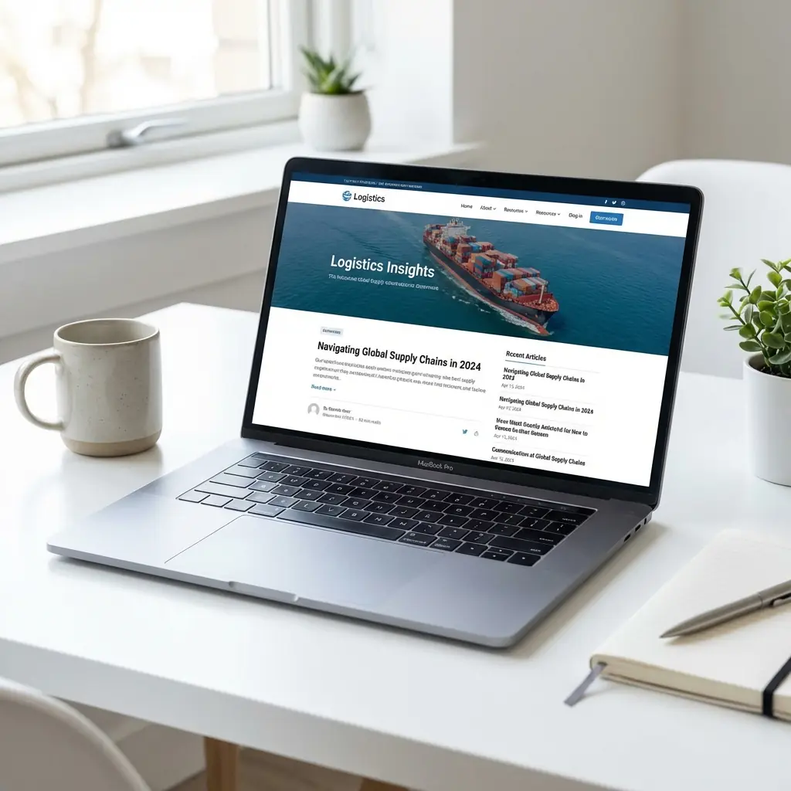

Unclear capabilities
Visitors cannot quickly understand modes, service areas, facilities, vertical expertise, or why they should trust you.
We build fast, modern websites that help transportation companies earn trust and get more quote requests.

Modern, fast websites for transportation businesses that build trust, communicate capability, and turn freight buyers into qualified inquiries.
Visitors cannot quickly understand modes, service areas, facilities, vertical expertise, or why they should trust you.
Template copy makes specialized logistics providers sound interchangeable.
Heavy pages and awkward mobile journeys weaken trust before a buyer reaches the quote form.
Hidden calls to action, long forms, and weak proof prevent qualified visitors from taking the next step.
You’ll always know what we’re working on, why it matters, and what comes next.
Review positioning, content, UX, speed, and conversion.
Map audiences, pages, messages, and user journeys.
Create a clear visual system and responsive experience.
Develop, test, track, and prepare the launch.
Use visitor and lead data to refine the experience.
Strategy, messaging, design, and development work together so your website makes complex services easy to understand—and easy to buy.
We organize the site around what buyers need to understand before they trust you with freight, inventory, or delivery.
We turn complicated services, modes, facilities, and coverage areas into a clear story buyers can scan and trust.
Your approved design becomes a polished site that loads quickly, works across devices, and is easy for your team to manage.
We protect the launch, verify the tracking, and use real visitor behavior to make the website more useful over time.
We show you the numbers that matter: good leads, sales conversations, and what your team says is actually working.
See which leads are a real fit and which ones are just noise.
See what you’re spending, what we’re doing, and what is improving.
Follow the path from a click or visit to a real sales opportunity.
Our work is based on how logistics companies actually run and how customers choose them.
Information architecture explains modes, facilities, technology, geography, and operational strengths.
Proof, authority, insurance, compliance context, and service detail appear where buyers need them.
Journeys can differ for shippers, partners, carriers, and existing customers.
Technical foundations, internal links, metadata, schema, and redirects support future organic growth.
Three sample directions showing how a logistics website can turn a complicated operation into a clear, modern sales tool.
Both options include strategy, copy, design, and development. The right fit depends on how many services, markets, and buyer journeys the site needs to support.
Final pricing depends on page count, integrations, migration needs, and content readiness. Hosting and ongoing growth support are quoted separately.
Timing depends on page count, content readiness, integrations, and approval speed. The proposal defines milestones before work begins.
Yes. Copy can be developed around your services, markets, buyers, differentiators, and conversion goals.
Often, yes. We review the platform, technical constraints, editing needs, and migration risk before recommending an approach.
Yes. Builds include a technical and structural SEO foundation; ongoing rankings may require a separate content and authority program.
Yes. Forms, calls, analytics, CRM routing, and supported operational integrations can be included in scope.
Support can include fixes, updates, testing, reporting, and ongoing conversion or SEO improvements depending on the engagement.